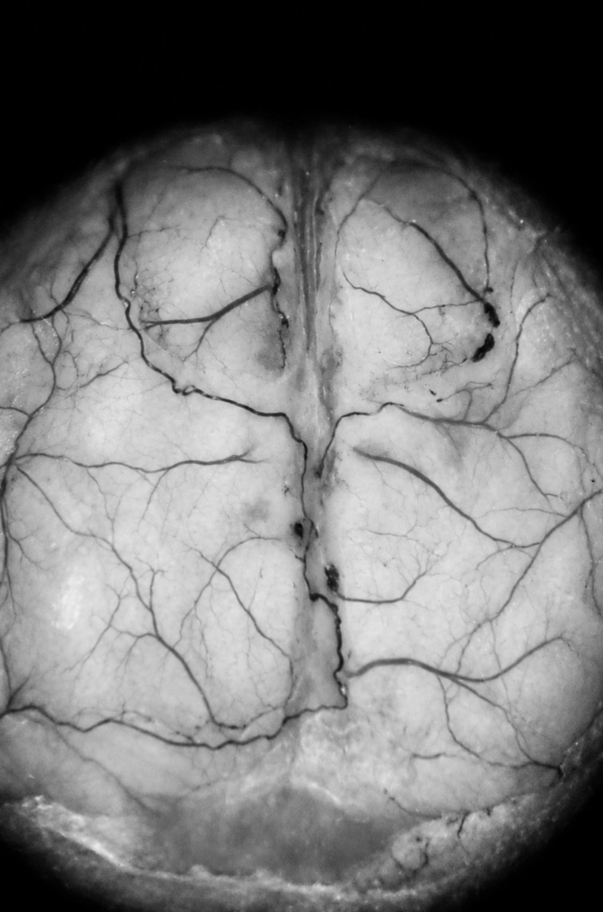

Neural & vascular dynamics
Exploring cortical activity and neurovascular coupling with optical imaging and EEG.
Explore the research →Connecting neural activity, vascular dynamics, and behavior through multimodal imaging, EEG, and computational analysis.

Exploring cortical activity and neurovascular coupling with optical imaging and EEG.
Explore the research →Examining how neural processes relate to behavior, cognition, and alcohol-induced impairment.
Explore our projects →Developing a virtual laboratory for exploring integrated neurophysiology.
Explore the virtual lab →Our recently submitted study examined whether AQP4 inhibition protects against acute alcohol-induced behavioral impairment.
An ongoing project developing an interactive virtual laboratory for exploring integrated neurophysiology.
An ongoing project combining optical imaging, EEG, and behavior to study brain dynamics in freely moving animals.